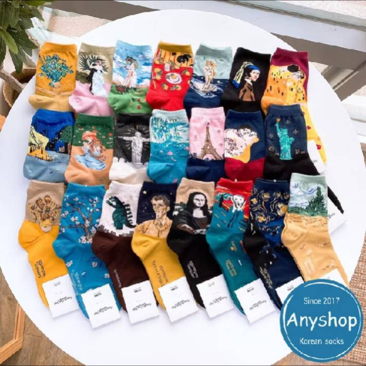

你是否曾經為挑選襪子而感到困惑？襪子在我們的日常生活中扮演著重要的角色。無論是在辦公室度過漫長的工作日，還是在學校裡忙碌的學習，襪子都是我們每天必備的基本配件。上班族和學生常常需要穿戴襪子超過8小時，選擇合適的襪子對於提升舒適感、改善工作效率以及保持腳部健康至關重要。了解如何選擇合適的襪子，不僅能確保日常穿著的舒適，還能避免因長時間穿戴不合適的襪子而造成的不適。接下來，我們將探討選擇襪子時需要考慮的要點，以及如何選擇出既實用又符合個人風格的襪子。
我過去在日常生活百貨店和賣場購買襪子發現不僅價格不一定友好，經常會購買到容易鬆動或造型過於老土的襪子。在運動用品店，雖然襪子品質較高，但價格往往不符合經濟實惠的需求。幾年前我去韓國旅遊時曾購買了幾雙襪子，發現這些韓國襪子相當滿足需求，而回台灣後也找到了一家網店提供類似的產品，往後幾年甚至直到今天都是在此店購買襪子。這裡推薦給大家，在文章的最後我也會分享我挑選襪子的準則，如果您跟我有一樣的選購需求，不妨到該商店看看：
在日常生活中，襪子不僅僅是為了保暖，它們也能影響到整體的舒適感和時尚造型。市面上的襪子種類繁多，包括運動襪、休閒襪、正式襪等，每種類型都有其獨特的功能和用途。了解不同類型的襪子，有助於選擇最適合您需求的產品，從而提升穿著的舒適度和效果。
舒適的襪子對於我們的日常生活至關重要。它們能夠減少足部的摩擦，預防起泡和不適，並保持足部的乾爽和健康。選擇合適的襪子可以改善穿鞋的感受，提升整體的舒適度，並且對於那些長時間站立或行走的人來說尤為重要。此外，舒適的襪子還能增強穿著者的自信心和愉悅感。
韓國襪子以其優質的材料和精緻的工藝聞名。首先，韓國襪子多採用高科技面料，如抗菌、吸濕排汗的功能性纖維，能夠有效保持足部乾爽和舒適。其次，韓國襪子的設計常常融入流行元素，色彩鮮豔，圖案多樣，滿足不同消費者的審美需求。此外，韓國襪子對於細節的處理十分講究，如無縫設計和加強型腳跟，提升了穿著的舒適感。
選擇韓國襪子時，品牌是影響品質和舒適度的重要因素。韓國市場上有許多知名品牌，如靜悅、Ozwear、Bamboo Socks等，每個品牌都有其獨特的產品線和特色。靜悅以其天然纖維和環保工藝著稱，Ozwear則以其時尚設計和高性能材料受到了廣泛喜愛，而Bamboo Socks則專注於竹纖維的舒適性和透氣性。根據您的需求選擇合適的品牌，可以保證襪子的質量和舒適度。
不同場合需要選擇不同款式的襪子。例如，運動時應選擇具有良好透氣性和減震功能的運動襪，而正式場合則應選擇簡約、優雅的正式襪。韓國襪子提供了多樣的選擇，無論是日常穿著、工作場合還是休閒聚會，都能找到合適的款式。運動襪通常具備加強的腳跟和足弓支撐，而正式襪則以光滑的質感和簡潔的設計為主。
為了延長韓國襪子的使用壽命，適當的護理和保養非常重要。首先，建議按照洗滌標籤上的指示進行清洗，通常需要用冷水手洗或使用洗衣袋機洗。避免使用漂白劑或高溫水洗滌，以免損壞襪子的纖維。其次，清洗後應自然晾乾，避免直接暴曬，以保持襪子的彈性和顏色。定期檢查襪子的狀況，及時修補小破損，以保持襪子的最佳狀態。
韓國襪子的價格範圍從平價到高端不等，取決於品牌、材質和設計。一般來說，普通的韓國襪子價格在100-300元左右，而高端品牌或功能性襪子的價格可能會更高。購買韓國襪子可以通過線上購物平台，如電商網站或品牌官方網站，也可以到專業的襪子店或韓國品牌專賣店選購。選擇可靠的銷售渠道，能夠保證產品的質量和售後服務。
襪子的搭配不僅影響穿著的舒適感，還能展現個人風格。現代的時尚趨勢鼓勵襪子成為造型的一部分，無論是搭配短褲、裙子還是長褲，都可以選擇有趣的顏色和圖案來增添個性。韓國襪子以其時尚和創意的設計受到了廣泛關注，許多設計師在襪子的搭配上也有獨到見解，如搭配運動鞋、皮鞋或靴子都能展現獨特的風格。選擇適合的襪子款式，既能提升整體造型，也能彰顯穿著者的品位。
根據日常穿著需求，我的挑選重點主要集中在以下幾點：
想要了解多日常用品嗎？請點擊以下連結閱讀更多相關文章。點我前往更多文章